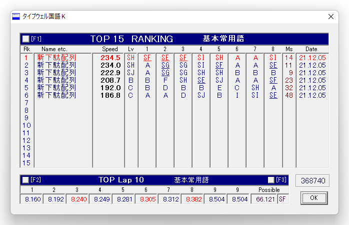
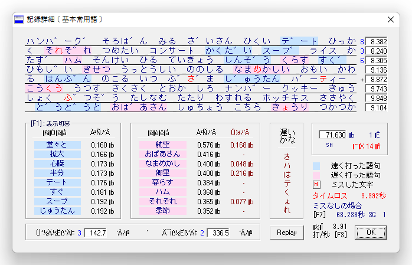

投稿日: 2021/12/05 23:58:28
カテゴリ: 新下駄配列
サムネイル: なし
 
だいぶブログも更新していなかったので、久々にタイプウェル国語Kをやってみたところ、やっぱり速度的には相変わらずB前後。早いときはSHとか行くけれど、そんなに速くはない。
というのも、多分それも当たり前で、自分が新下駄配列に求めているのは "打鍵時の楽さ" であって、速度面を伸ばそうという努力は全然していないので、当然といえる結果かも。
さて、こちらも久々に、打鍵動画を撮ってみた。上記の結果がそのまんま動画になったような感じで、自然体で打ったものをただそのまま収録してみて、ミスもどんなのが出やすい配列なのか感じてもらえるようであれば嬉しい。
こうやって動画を撮ってみて、なかなか難しいなと思ったのは、どうしてもやっぱり速度面が気になってしまって、たどたどしい部分が引っかかって見えるのだけれど、重要なのは自然体で打鍵したときの楽さだとやはり思っていて、そういう手の疲労感だとか、力の抜き加減とかが、なかなか動画では表現しにくいのがなんとももどかしい。
また、久しぶりにタイプウェルを打ってみて気づいたこととして、こうやって普通にブログを打つのはとても楽しくて楽なのだけれど、タイプウェルのようにあまり打たない単語を打つと指が痛くて楽しくない。速度面が可視化されるのはとても楽しいのだけれど、Dvorakでもそうだったように、途中からこういう練習ソフトを使わなくなってしまうのは、やっぱり単純に苦行だからなのかもしれない。
もちろん、普段打たない単語の打鍵速度が向上するというのはとても大事なことだとは思うのだけれど、自分が普段打つ言葉って多分だいぶ限られていて、かつ名詞以上に助詞とかも重要で、ある程度以上になると長文の練習のほうが向いているように感じるのはそういうことかもしれない。
さて、こうして書いていると、個人的に新下駄配列練習はもう自分のニーズにとっては十分習熟しているように思うので、以前も同じ締めくくりをしたようにも思うけれど、このあたりで練習記録は終えてもいいかなと若干思いつつある。
それにしても、配列自体の探求はもうちょっと続けていきたいなーという気はしてて、新下駄配列は自分のニーズには十分合っているのだけれど、タイプウェルで示されているように、普段打たない単語の打鍵が辛かったり、課題点がないわけでもないので、将来もしゆっくりと時間がとれることがあれば、よりよい配列を求めて再探求するかもしれない。
ただ、いろんなデバイスで打鍵できて、速度面がそこそこ速く、打鍵量が少なくて楽という配列は他にそうそうないので、当分は新下駄配列を使いつづけて行くんじゃないかなと思う。自分でより良い配列を再考したりする時間が取れれば良いけど、それは当分先のことになりそうだな。